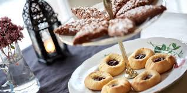
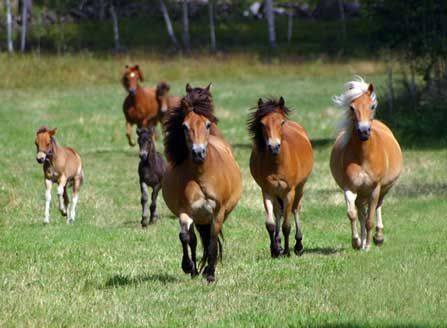
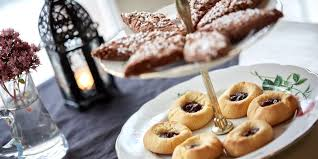
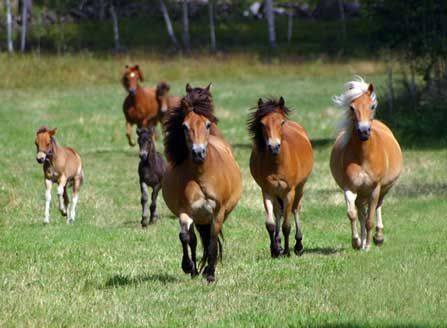
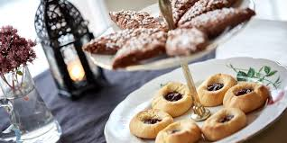
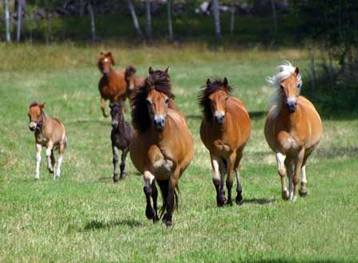
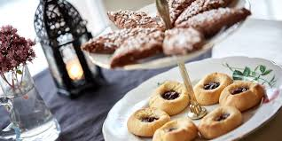
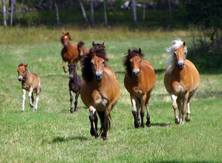

På gården i Vall, som varit i familjen Walliers ägo i fyra generationer, kan du avnjuta en mumsig fika i ladan medan barnen tar en tur i skogen med något av våra underbara gotlandsruss Hassel, Viola, Mynta, Kastanj och Diger. Eller varför inte ta en titt i vår gårdsbutik där du hittar diverse betongföremål och vår egen möbelserie Wallwood.